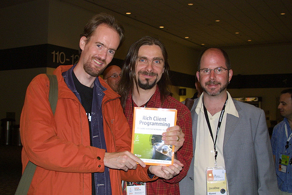
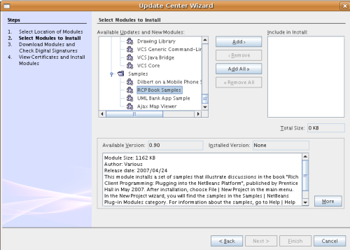
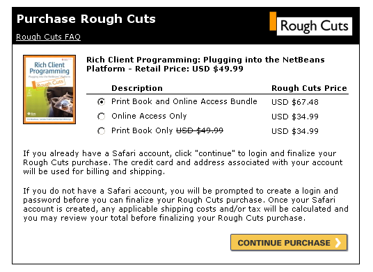
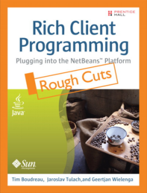

Rich Client Programming: Plugging into the NetBeans Platform
The official page for the latest and greatest book on the NetBeans Platform,
due to be released May 2007!
10 September 2007: Javalobby Publishes Book Review
"This book is admirable in its completeness and its clarity." For the full
review, click here.
17 June 2007: Errata Published
We have begun, based on user feedback, gathering the 'errata' of the book
into a central location. Click below to jump to the errata page for the book:
Errata for "Rich Client Programming: Plugging into the NetBeans Platform"
If you have come across code or text in the book that you believe
is not entirely correct, please write to dev@openide.netbeans.org with
your comments. Your issues will be discussed on that list and, if it turns
out that your comments are genuinely 'errata worthy', they will be added to
the errata page.
7 May 2007: Exclusive picture of the authors!
A picture taken by Jim Grisanzio, at NetBeans Day in San Francisco:

Left to right: Geertjan Wielenga, Jaroslav Tulach, Tim Boudreau
5 May 2007: The book is real.
Today the book was delivered in Prague, where NetBeans is based.
If you come to NetBeans Day on Monday May 7, you will get your own
copy, as shown here:
3 May 2007: Book Samples Now in 5.5 Update Center!
NetBeans IDE 5.5 update center now provides
the samples (in addition to the 6.0 development update center, as previously announced):

25 April 2007: Book Samples Freely Available in Update Center!
NetBeans IDE 6.0 development update center now provides
the samples. For more information,
click here.
27 February 2007: Rough Cuts Available!
The rough cuts are available, click here to get to the site
and purchase your very own copy:

26 February 2007: Front Cover.
Soon the Rough Cut version of the book will be available here.
This is what the front cover of the book looks like:

16 February 2007: Early Pre-release.
We're pre-releasing a draft of one of the earliest chapters of the book, which sets
the tone for the rest of it: Chapter 2: The Benefits of Modular Programming
27 January 2007: Planned Table of Contents.
The planned table of contents for the book Rich Client Programming
is as follows:
- Getting Started with the NetBeans Platform
- The Benefits of Modular Programming
- Modular Architecture
- Loosely Coupled Communication
- Lookup
- Filesystems
- Threading, Listener Patterns, and MIME Lookup
- The Window System
- Graphical User Interfaces
- Nodes, Explorer Views, Actions, and Presenters
- MultiView Editors
- Syntax Highlighting
- Code Completion
- Component Palettes
- Hyperlinks
- Annotations
- Options Windows
- Web Frameworks
- Web Services
- JavaHelp Documentation
- Update Centers
- Appendices
- Appendix A: Advanced Module System Techniques
- Appendix B: Common Idioms and Code Patterns in NetBeans
- Appendix C: Performance